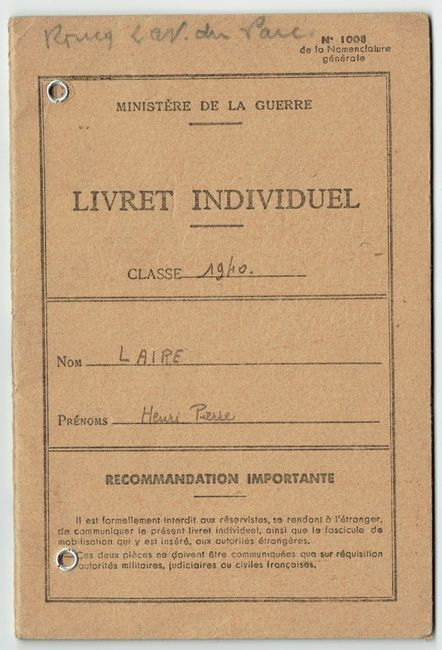

Le Livret Individuel est la pièce d’identité militaire remise à chaque soldat français mobilisé en 1939‑1940. Il regroupe les informations essentielles : état civil, affectations, permissions, vaccinations, matériel perçu et campagnes effectuées.
Ce livret servait à identifier le soldat, suivre ses affectations, enregistrer ses permissions, noter ses vaccinations et consigner son matériel. Il devait être conservé en permanence et présenté à chaque contrôle administratif.
Le document rappelle qu’il est strictement interdit de le montrer à des autorités étrangères, afin d’éviter la divulgation d’informations sensibles sur les unités françaises.
En 1939‑1940, la France mobilise plus de 5 millions d’hommes. Chaque soldat reçoit ce livret, devenu un élément central de son identité militaire. Après la défaite, de nombreux livrets sont saisis, perdus ou conservés par les familles.
Ce document est essentiel pour retracer la carrière d’un soldat, comprendre l’organisation de l’armée française et étudier la mobilisation de 1939‑1940.